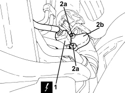

3350E20 STEERING ANGLE SENSOR - R.R.
- Path
- Procedures > 33 BRAKES > 3350 TRACTION CONTROL > 3350E VEHICLE DIRECTION CONTROL SYSTEM VDC/ESP > 3350E20 STEERING ANGLE SENSOR - R.R.
- Kind
- repair procedure (removal / refitting; the operation number is the code)
- Applies to
- all engines; all production periods; only with equipment: ABS and ESP
- Interactive page
- https://sloeber94.github.io/elrnDB-fCrm/en/#/194000513
Applies to: engines: 1.8, 1.9 JTD 8v; all production periods; only with equipment: ABS
 Removing
Removing
 Refitting
Refitting- Position the vehicle on a lift.
- Make sure that the ignition key is in the OFF position, then disconnect the battery terminal (-).
Description | Connector | |
|---|---|---|
- | Battery |
1. Disconnect the electrical connection from the steering angle sensor.
Description | Connector | |
|---|---|---|
1 | Steering lock control unit (NBS) |
2. Undo the bolts (2a) and remove the steering angle sensor (2b) from the power assisted steering box.

Applies to: engines: 1.8, 1.9 JTD 8v; all production periods; only with equipment: ABS
Refitting
Removing- Place the steering angle sensor back in its housing and secure it tightening the bolts to the recommended torque.
- Connect the electrical connection to the steering angle sensor.
- Connect the negative battery terminal.
- Remove the vehicle from the lift.
Applies to: all engines; all production periods; only with equipment: ESP
- The steering angle sensor is built into the steering wheel stalk unit and cannot be dismantled individually. Refer to
Op. 5550A13 TORQUE UNIT ASSEMBLY - R&R FOR VERSIONS WITH ESP
Topics linked from this page (3)
- 5550A13 <x>TORQUE UNIT ASSEMBLY - R&R FOR VERSIONS WITH ESP</x>
- A001 BATTERY
- M089 STEERING LOCK CONTROL UNIT (NBS)